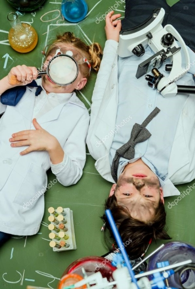
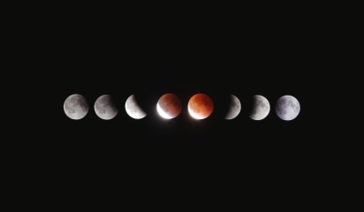
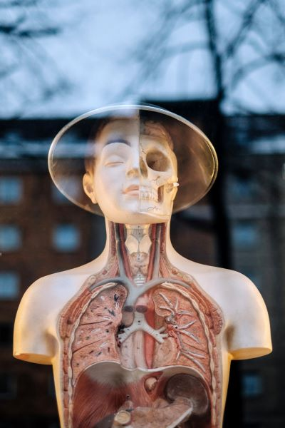
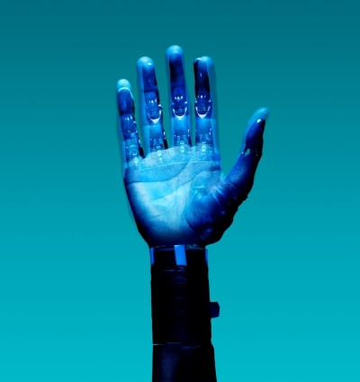

For kids

Are you a young person looking to learn more about science? Come on
down to our museum, there’s plenty to see and do. You can learn
about Newtonian physics from our bumper swing, or why not travel
back in time and meet our resident Woolly Mammoth? Our exhibits are
designed to be accessible for interested minds, so make sure you
come ready to learn and explore. We also have the Young Stars club
which meets once a week on a Saturday between 10:00 and 13:00 where
you’ll get to explore and experiment with our team of experts.
During the school holidays we run special holiday clubs where you
can join other children your age to go on a journey of discovery.
Each holiday we pick a new theme to explore. To find out more about
the holiday club and how you can join, send us a message.
For teachers
As a community-driven museum, we want to work with schools to create
places of learning and exploring. Our team are on hand to give your
students guided tours of the museum, teach them in our learning
laboratory, and provide great video presentations that will excite
and inspire them. Please get in touch with us here to find out more
about our facilities and to arrange a time to bring your students
through for a visit.
Researchers
Are you looking to get involved with our team of researchers and
academics? Our museum offers various ways for you to use our
resources and contribute towards them. We have online records,
laboratory space, and a working relationship with a number of
universities around the country.
Cosmology

Explore the wonders of our cosmos. Our fantastic exhibition, ‘The
Sky Above Us’, explores the night sky and what we can see and know
about the universe around us. We’ll locate the various
constellations and galaxies that can be seen and learn a bit about
the early navigators who used the stars to travel by. Follow the
journey of our solar exploration: from early Arab traders, to
Galileo’s telescope, to the latest exploration of the planets in our
solar system.
Evolution

For centuries, philosophers and scientists have wrestled with the
question of our origins. Where do we come from and how did we get
here? Since Darwin proposed his theory of evolution we have had a
framework for exploring and understanding our place in this world.
Discover the origins of life on this planet and how the species we
know today have evolved our time. You can also take some time to
meet a few of the creatures who didn’t survive, including our Woolly
Mammoth, the Dodos, and a number of dinosaurs too.
Biology and Medicine

From micro-organisms to the human body, major breakthroughs in
biology are offering us unique insights into the great wonders of
the tiny world. For many people their life expectancy is much longer
and their quality of life much improved, thanks to the growth of our
understanding of medicine. Over a series of exhibits we explore the
history of medicine and take a look at some major breakthroughs
including the discovery of penicillin and the first heart
transplant. Many of our great medicinal discoveries have come not
only from the lab, but also from observing animals in the wild.
Often our fellow creatures have beat us to it.
Robotics and AI

The information revolution is here and robotics and artificial
intelligence are the science of the future. From useful home
applications of AI to industrial uses of robotics, the future is
here. You can even say hello and shake the hand of Rob the Robot.